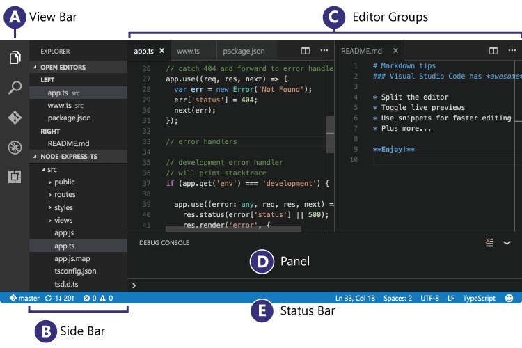
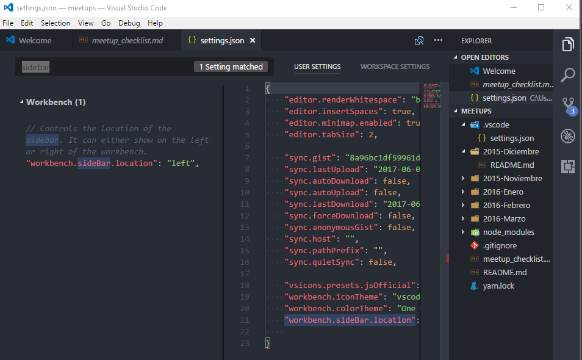

How do I move the panel in Visual Studio Code to the right side?
It's at the bottom by default.
For example in the following image ,panel(Section D) is at the bottom, instead I want it to move to the rightside i.e., in the area where README.md editior shown in Editor Groups(Section C). 
Image Credits: (https://code.visualstudio.com/images/codebasics_hero.png)
Answer
As of October 2018 (version 1.29) the button in @mvvijesh's answer no longer exists.
You now have 2 options. Right click the panel's toolbar (nowhere else on the panel will work) and choose "move panel right/bottom":

Or choose " View: Toggle Panel Position " from the command palette.
Source: VSCode update notes: https://code.visualstudio.com/updates/v1_29#_panel-position-button-to-context- menu
Suggest
For people looking for an answer (on how to move the side panel):
You can press
ctrl + , (Or cmd + , on OSX)
and add the following option to your user settings JSON file:
"workbench.sideBar.location": "right"
